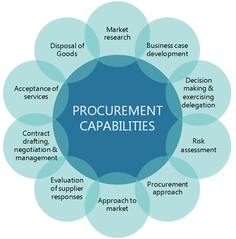

Capability refers to the abilities, skills and competencies required to perform a role. Procurement is core business for government agencies. Procurement and contracting is identified as an essential capability by the Australian Public Service Leadership and Core Skills strategy. 21 Procurement in government is generally undertaken by procurement officers based within individual agencies and requires a range of capabilities.

Past reviews of government procurement suggest that the public sector may not always have the ICT project management, contract negotiation or business case development capabilities required for effective procurement. Such reviews have recommended the creation of career pathways and development programs in key skill areas. 23,24
In response to capability gaps, some agencies (such as Defence) have developed their own in-house procurement capability strategies and training. In addition, some state and territory governments are using partnerships with SMEs to bring key technical capabilities into government. 25,26 While collaboration is often espoused as an objective of government in ICT procurement it can be difficult to achieve in practice, especially in the context of procurement rules and probity requirements. For this reason, there appears to be few formal avenues for businesses to pitch ideas or offerings to agencies, or to work with agencies to develop innovative solutions to problems.
The NSW government recently implemented a new policy that empowers NSW agencies to trial innovative solutions with local startups and SMEs. The policy recognises the importance of proof-of-concept testing to create evidence about the feasibility of a solution to meet a business need under realistic operating conditions.
From October 2016, NSW agencies can engage SMEs through direct negotiation on short-term contracts valued up to $1,000,000 in order to do proof-of-concept testing or outcomes-based trials. Following a proof-of-concept trial, any subsequent procurement must be undertaken through a competitive procurement process, to give other potential suppliers scope to compete and confidence in the robustness of the procurement.
The ACT's Small Business Innovation Partnerships (SBIP) Program is a staged procurement process that connects ACT Government Directorates with innovative SMEs to co-design solutions to specific problems while supporting local businesses to commercialise their products.
Under the SBIP, a directorate identifies an issue or problem that requires a solution. Rather than moving to procure a particular product, the directorate invites SMEs to propose innovative solutions. SMEs that present a potentially viable solution are engaged to work with the directorate to develop a prototype or pilot their product over a period of up to six months. If the solution is proven to be viable, the directorate can choose to work with the SME to undertake a commercial scale rollout.
By taking a partnership approach, the SBIP provides direct opportunities to participate in government procurement focused innovation, provides a channel through which the public sector can access new, cost-effective and innovative solutions.